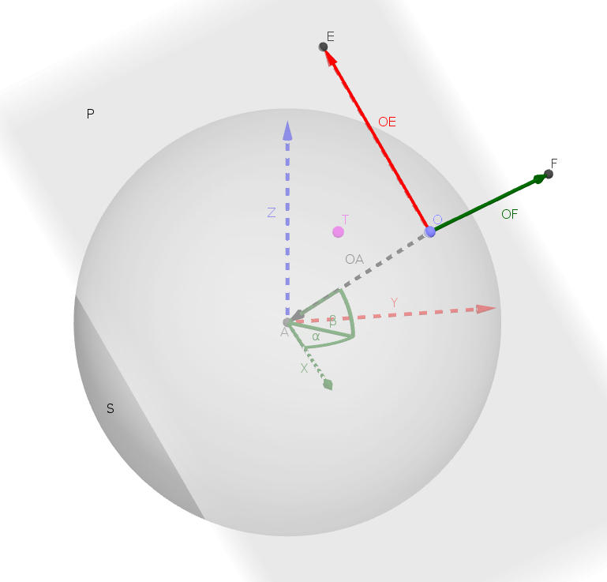

TP : Modéliser de la 3D en 2D
I Modélisation
A D’un repérage sphérique à cartésien
B Projeté orthogonal
a Qu’est ce qu’un projeté orthogonal ?
b Application
C R2
a Qu’est-ce qu’un repère ?
b OE
c OF
II De la 3D à la 2D
Le principe de ce projet est de modeliser ou plutôt de visualiser des formes en trois dimension ( dans l’espace ) àl’aide d’un moteur graphique à deux dimensions. Pour cela, il nous faut alors comprendre comment représenter des objets de l’espace sur le plan.
Tout d’abord, il est important de réduire notre problème en un cas plus simple de compréhension. Tout objet de l’espace est structuré par un ensemble de points que nous allons repérer dans cet espace. Nous nous pencherons alors sur un seul point T pour cette démonstration. Pour materialiser mathématiquement cet espace, nous allons utiliser un repérage cartésien de trois dimensions, modelisé par un repère orthonormé R3 de dimension-3 avec pour centre un point A. Nous allons donc nous pencher sur la traduction de cordonnées cartésiennes 3D d’un point en coordonnée cartésiennes 2D.
Maintenant, il faut imaginer un espace où, pour materialiser l’observation en 2D, se déplace une “caméra” (materailisée par un point de l’espace) O autour de notre objet. La transformation de notre point en deux 2D se fera donc par la vue de cette camera. Pour obtenir maintenant notre vue de camera, nous allons utiliser un plan representatif P de notre vue, muni d’un repère orthormé cartésien R2 de centre O.
Pour simplifier nos calculs, nous allons également limiter les deplacements de notre caméra en les limitant à un mouvement sur la surface d’une sphère S de centre A et de rayon r. La distance entre O et A est egale à r. Puisque la caméra ne peut se deplacer que sur la surface d’une sphère, elle peut-être alors repérer par des cordonnées sphérique avec le couple ( α ; β ). Pour prendre exemple la Terre également repéreé en coordonée spheriques, α correspond à la longitude et β corresont à la lattitude. Les deplacement de notre caméra ne se résumeront plus qu’à une variation des angles α et β entre -90° et 90°.
Mathematiquement, cela donne:
$$ {J(\theta) =\frac{1}{2m} [\sum^m_{i=1}(h_\theta(x^{(i)}) - y^{(i)})2 + \lambda\sum^n_{j=1}\theta^2_j} $$
